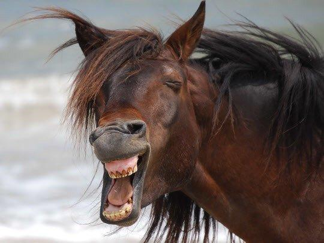
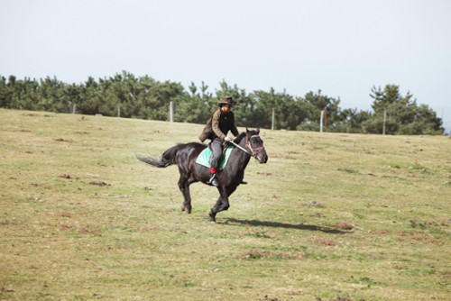

- 나무
- 곰
- 말
말
제주마. 천연기념물 347호. 흔히 몽고마로 잘못 알려져 있으나,
제주마는 초기 청동기 시대 내지 삼한시대부터 있었던 말들이 몽골에 의해 제주도에 들어온
몽골/서아시아산 말들과 교잡되고, 조선시대에 말 품종개량을 하면서 추가로 변하는 과정을 거쳐
현재까지 남아있는 말이다. 조랑말이지만 키가 암컷 117㎝, 수컷 115㎝로 중형 마종에 속한다.

한국에서 말은 제주도 말이 유명하며, 실제로 제주도에서는 말이 비교적 흔해서 과거 제주도에서는
제주마로 밭을 갈기도 했다. 그 이전에도 말을 기르긴 했지만 본격적으로 제주도가 말의 섬이 된 것은
려 말 원간섭기 몽골식 목마장이 들어온 시기부터로 보인다. 1986년에 천연기념물로 등록되고,
1999년에 제주마 혈통서 관리가 시작되었다. 이후 2002년부터 혈통 등록 또는 확인된 제주마가 출전하는
경마 경주가 개최되고 있다. 사진은 제주축산진흥원의 제주마 전용 방목지.
